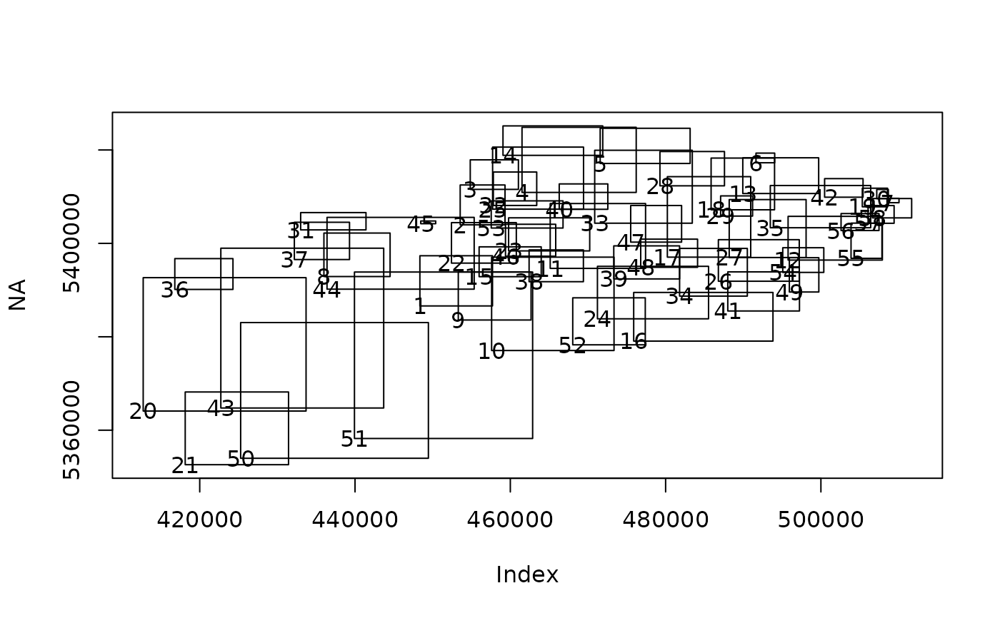

Read properties of geometry from a source, optionally after SQL execution.
vapour_geom_summary(
dsource,
layer = 0L,
sql = "",
limit_n = NULL,
skip_n = 0,
extent = NA
)data source name (path to file, connection string, URL)
integer of layer to work with, defaults to the first (0) or the name of the layer
if not empty this is executed against the data source (layer will be ignored)
an arbitrary limit to the number of features scanned
an arbitrary number of features to skip
apply an arbitrary extent, only when 'sql' used (must be 'ex = c(xmin, xmax, ymin, ymax)' but sp bbox, sf bbox, and raster extent also accepted)
list containing the following
FID the feature id value (an integer, usually sequential)
valid_geometry logical value if a non-empty geometry is available
type integer value of geometry type from GDAL enumeration
xmin, xmax, ymin, ymax numeric values of the extent (bounding box) of each geometry
Use limit_n to arbitrarily limit the number of features queried.
file <- "list_locality_postcode_meander_valley.tab"
mvfile <- system.file(file.path("extdata/tab", file), package="vapour")
vapour_geom_summary(mvfile, limit_n = 3L)
#> $FID
#> [1] 1 2 3
#>
#> $valid_geometry
#> [1] TRUE TRUE TRUE
#>
#> $type
#> [1] 3 6 3
#>
#> $xmin
#> [1] 448353.3 453543.6 454839.8
#>
#> $xmax
#> [1] 457705.8 459318.0 461042.0
#>
#> $ymin
#> [1] 5386606 5403972 5411562
#>
#> $ymax
#> [1] 5397352 5412505 5417892
#>
gsum <- vapour_geom_summary(mvfile)
plot(NA, xlim = range(c(gsum$xmin, gsum$xmax), na.rm = TRUE),
ylim = range(c(gsum$ymin, gsum$ymax), na.rm = TRUE))
rect(gsum$xmin, gsum$ymin, gsum$xmax, gsum$ymax)
text(gsum$xmin, gsum$ymin, labels = gsum$FID)
